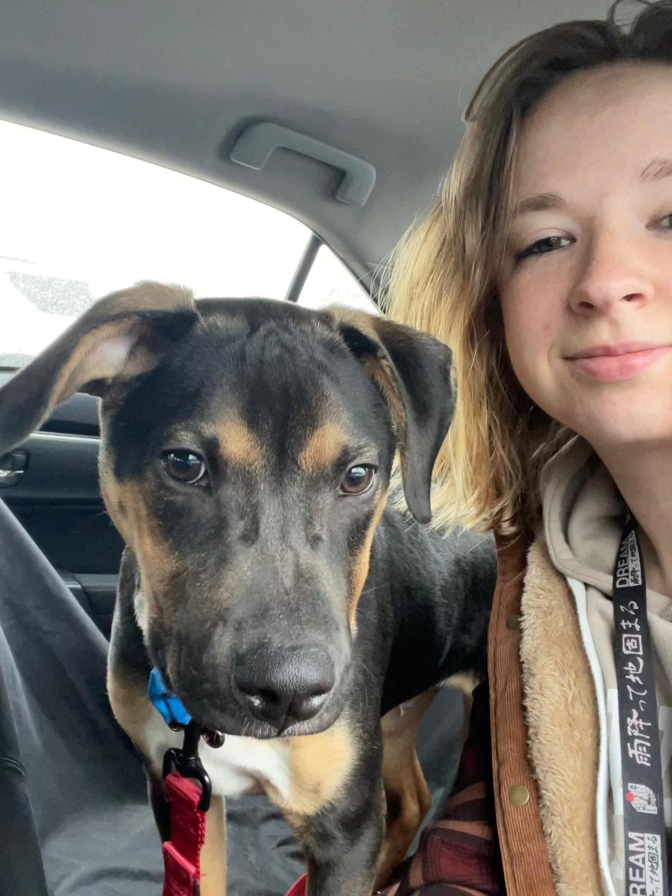

My name is Abigail Dillehay, and I think I'm a Junior. I earned my Associate's Degree in Computer Science from Ivy Tech,
then transferred to IUPUI, and changed my major a couple of times before I settled on CIT.
The picture above is me with my recently adopted puppy, Hunter!